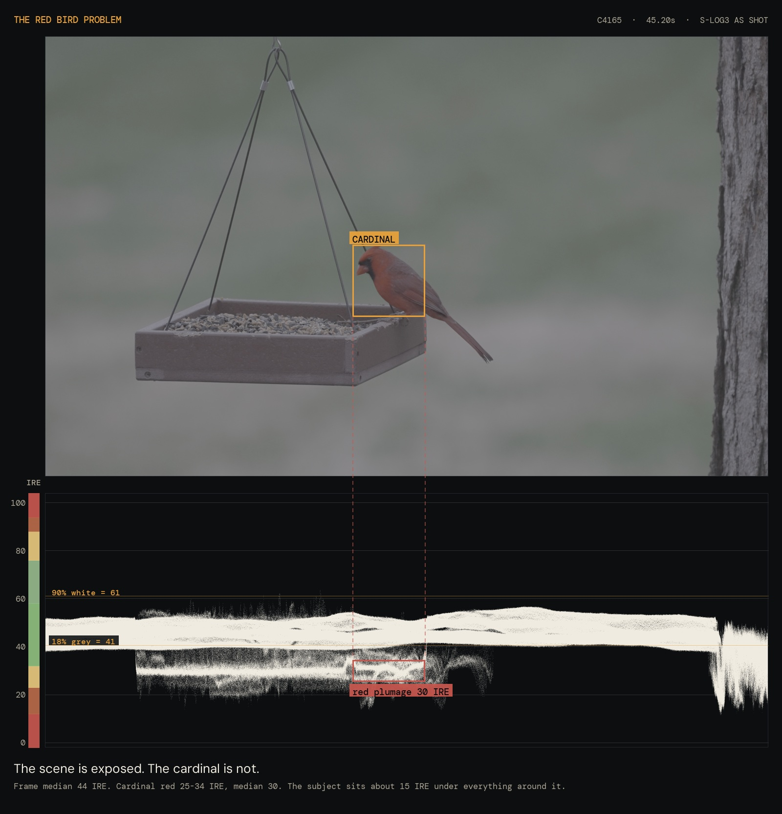
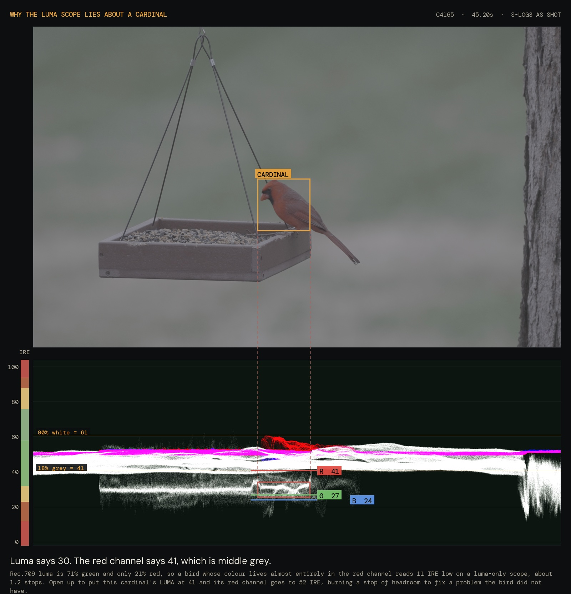
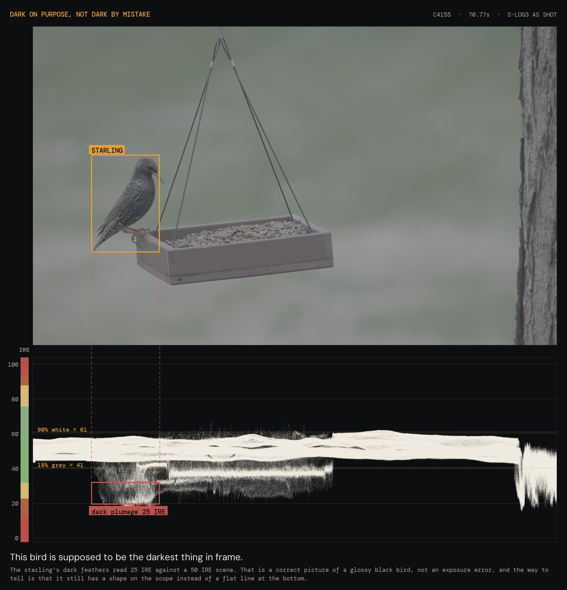
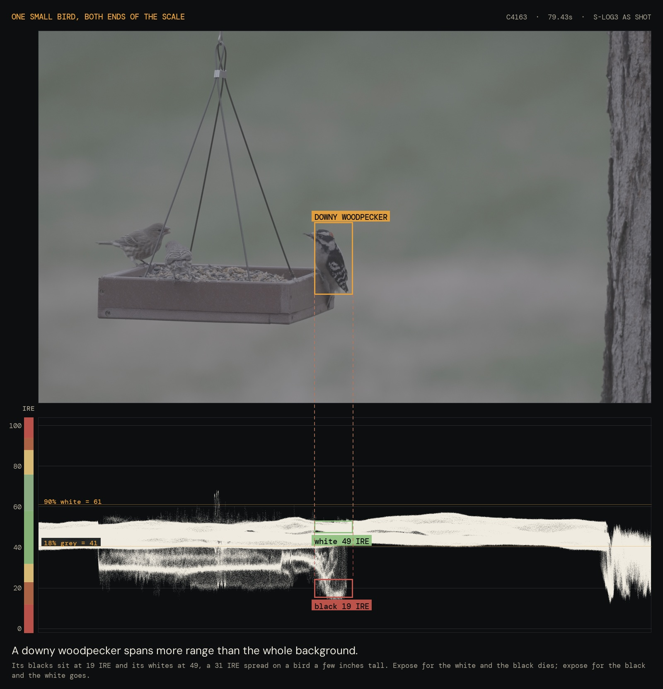

The scope on the monitor answers one question well: is the bird exposed. It does not answer whether the picture looks nice, and it will quietly lie to you about a cardinal. Every number on this page was measured off real frames from this yard, shot on the a7S III in S-Log3, not taken from a chart.
v1.1.1 · Updated Sat / 2026-10-03 / 7:02 PM CT · measured from 2024 12 31 Overcast Tree Feeder
A histogram counts pixels by brightness and throws away where they were. A waveform keeps the position: the scope is as wide as the frame, and each column of the scope is the same column of the picture, stood on end. Brightness runs up the side in IRE, 0 at the bottom, 100 at the top.
That is what makes it useful for birds. Find the bird in the frame, note how far across it sits, then look straight down at that part of the scope. The trace at that column is the bird. Everything to the left and right of it is the yard, and you can ignore it.

S-Log3 puts its reference points in fixed places, and they never move with ISO or lens. Learn these four and the scope becomes readable:
41 IRE is middle grey. An 18 percent grey card sits there. 61 IRE is a white card at 90 percent reflectance. 94 IRE is the end, where this camera clips and nothing comes back. 12 IRE is the floor of the useful curve, exactly four stops under middle grey, below which S-Log3 stops being a log curve at all.
Between them, the conversion is simple enough to do in your head: one stop is about 9 IRE. A bird at 32 IRE is one stop under middle grey. A bird at 50 is one stop over. That single number turns the scope into an exposure meter.
Luma is not brightness. It is a weighted mix of the three colour channels, and the weights are lopsided: 71 percent green, 21 percent red, 7 percent blue. Green carries almost all of it. So a bird whose colour lives almost entirely in the red channel reads low on a luma scope, not because it is underexposed, but because the scope is mostly measuring a channel that bird does not have much of.
Measured on this cardinal: the luma trace sits at 30 IRE. The red channel sits at 41, which is middle grey exactly. The bird was correctly exposed the whole time.

So the rule for a strongly coloured bird is to judge it on the channel it actually lives in. On the a7S III that means switching the scope to RGB rather than luma when a cardinal, a bluebird or a goldfinch is the subject. On a luma-only scope, add roughly 11 IRE to what you read on a red bird and about 8 IRE on a blue one to get to the channel that matters.
All of these came out of one session, so the exposure is identical across every row and the only thing changing is the bird. The bar is the middle 90 percent of that plumage, and the white line is its median.
Luma values, as a luma scope would show them. The right hand column is the channel that plumage actually lives in, which is the number worth exposing to.
Read the bird off the scope, tell this what it was, and it will say whether to leave it alone.
This is the harder question, and the scope answers it by shape rather than by height. A subject that is genuinely dark still has structure on the scope: the trace wanders, it has thickness, there are lighter and darker parts of it. A subject that has been crushed is flat. It lies along the bottom in a straight line because every pixel hit the same floor, and no amount of lifting in the grade brings back a difference that was never recorded.

The out of focus shapes behind the feeders are the same question. A leaf shadow and a dark car parked in the shade look identical in the viewfinder, and they look identical on the scope too, because the scope does not know what things are. What it can tell you is whether that dark region is still recording detail or has bottomed out. If the background trace sits at 20 IRE with texture in it, it is a real dark thing and it will grade. If it is a flat line at the very bottom, it is gone, and the only question left is whether you mind.
Practically, none of that should change your exposure. Expose for the bird. Let the background land where it lands. A yard that goes properly dark behind a well exposed bird is a good picture, and a yard held up at the cost of a blown feeder roof is not.

ISO does not move where the bird sits on the scope. Exposure does that. What ISO decides is how much of the picture is still information rather than noise once you lift it in the grade, which is why 30 IRE is comfortable at one ISO and ugly at another.
This camera has two base sensitivities in S-Log3, 640 and 12,800, and the second one is not a compromise. It is a genuine second starting point, which is the whole reason the a7S III is the right body for a feeder in shade.
| ISO in S-Log3 | Measured range | What it means here |
|---|---|---|
| 640 | 12.4 stops | The cleanest setting. Bright overcast or better, and rarely available at 1/1000 under a tree. |
| 2,000 | better than 12,800 | Fine. The gap between the bases is not uniformly bad and the low end of it is good. |
| 6,400 to 10,000 | worse than 12,800 | The one range worth stepping over. Pushed hard off the low base, just short of the switch. |
| 12,800 | 12.1 stops | The second base. Effectively free range, and where most feeder work belongs. |
| 16,000 | 11.9 stops | A fifth of a stop off 12,800. Worth it whenever it buys the shutter speed. |
Lab figures from CineD's Xyla 21 measurements of this body at SNR 2. The comparison of the intermediate ISOs is derived from measured sensor data rather than published for video, so treat the 6,400 to 10,000 trough as a shape to avoid rather than a precise cliff. Note also that this camera applies noise reduction that cannot be switched off, which flatters the noise floor in exactly these tests.
The practical version: at 12,800 or 16,000, a bird sitting anywhere above about 25 IRE lifts cleanly. Below 20 it starts costing something, and the cost lands first in the red channel, which is the noisiest one and also the one a cardinal is made of.
Companion page: the Light and Lens calculator solves the other half, which is what aperture the feeder needs and what shutter the light affords.
v1.1.1 (2026-10-03, 7:02 PM): Footer: Built by Colton now links builtbycolton.com; 'with Claude' retired (global law 2.31.0). Nothing else on the page changed.
v1.1.0 (2026-09-26, 8:49 PM): The footer now lists every page of the site, on every page, with the one you are on marked. Each page used to carry its own partial list, and the published contact sheets and the player carried almost none, so the deeper pages were only findable if you already knew they were there.
Every figure is one real frame from 2024 12 31 Overcast Tree Feeder, decoded from the original 4K 120p files at 10 bit, with the waveform generated from the source clip in its native YUV rather than redrawn from a screenshot. Luma is read as code values and converted with IRE = (CV − 64) / 876 × 100, which reproduces Sony's own published reference points exactly: code value 95 for black at 3.5 IRE, 420 for 18 percent grey at 41, and 598 for 90 percent white at 61.
Plumage was isolated by chroma rather than by hand, keeping only pixels whose hue and saturation match the bird and only where those pixels cluster densely, which keeps warm seed hulls and tinted feeder wood out of the cardinal's numbers. Channel values come from converting the same pixels back to R, G and B in the identical code value space, so every number on this page sits on one ruler. The per channel figures held to within half an IRE across two independent frames of different cardinals.
One stop equals log10(2) × 261.5 = 78.7 code values = 8.99 IRE in the log part of the curve, which is where the "about 9 IRE" shorthand comes from. The clipping point of 94 IRE works out to 6.01 stops above middle grey.
v1.0.0 (2026-09-26, 8:22 PM): First edition. The waveform explained for bird exposure, the IRE band ruler with S-Log3's four anchors, the luma versus channel finding with an RGB parade of a real cardinal, measured landing bands for seven kinds of plumage, a reading checker, the dark subject question, and the ISO table.